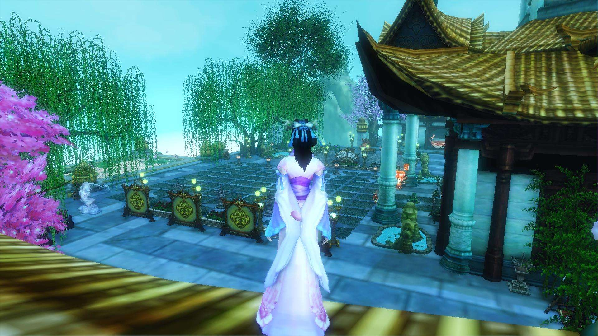

尧有十个儿子，十个儿子当中，丹朱是年纪最大的，可也是最不成器的一个。 丹朱为人骄傲暴虐，常常喜欢和伙伴们带了随从臣仆，到各地去漫游，稍不如意的地方，就要迁怒于人，大发脾气，虐待他的臣下。 那时候洪水为患，弥漫天下，丹朱出去游玩，总是坐船去，渐渐习惯了水上的生活，对于人民的疾苦满不在乎，倒是觉得坐着船出去东游西荡非常有意思。 后来洪水被大禹治理平息了，有些地方水浅，不能通船，任性的丹朱就不分昼夜地叫人替他推着船走，称之为陆地行舟。船在泥沙和水草之间摩擦着，颠簸着，发出咯吱咯吱的声响。推船的人累得气喘吁吁，汗流浃背，丹朱和他的伙伴们却在船上吃喝玩乐，哈哈大笑，脸上表现出毫无心肝的兴奋神情。 不出去玩的时候，丹朱和他的伙伴们干脆就关起门来，在家里为所欲为，他们什么坏事都干得出来，闹得实在有些不像话。 丹朱的弟弟们见哥哥这样胡作非为，也都不服他的管教，弟兄们时常发生内讧，彼此间纷争不休。 尧看见丹朱性情太恶劣，教育无效，心中暗自焦急。他因此创制了围棋这种游戏来教给丹朱，希望能够在潜移默化中改善丹朱的性情，使他能够改邪归正。
